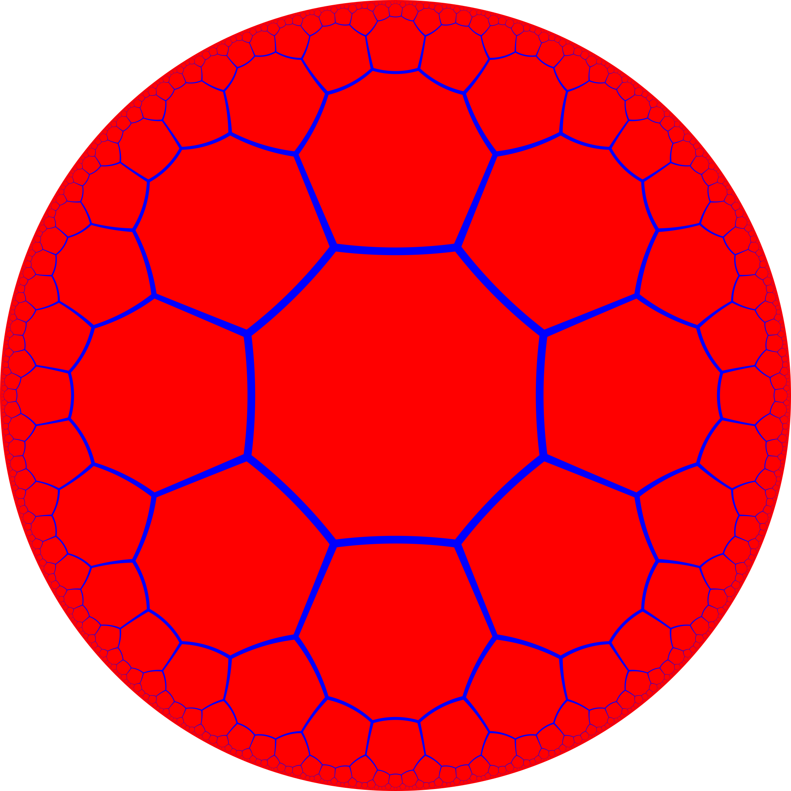
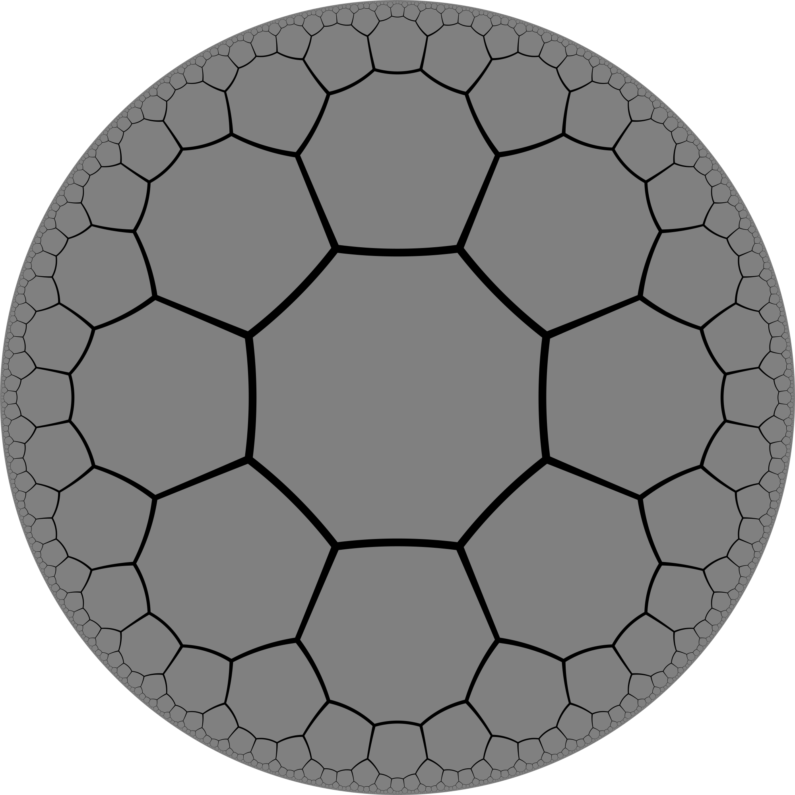

Hyperbolic Geometry
Table of Contents
Introduction

Riddle
A person is standing somewhere on Earth.
They walk 10km S, 10km E, 10km N.
They are back where they started.
Where are they?
Videos
1
2
Properties
Exponential
\(\text{circumference} \propto e^\text{radius}\)
\(\text{area} \propto e^\text{radius}\)
\(\Downarrow\)
\(\text{circumference} \propto \text{area}\)
Gyrovector space
Vectors rotate when you translate them.
\(\text{NE} \neq \text{EN}\)
\(\Downarrow\)
Coordinates are very expensive relative to radius.
Special Relativity
Velocities are points in
\[\mathbf{H}^3\]
Curvature is \(c\).
Consequence
No need for “boosts”, Lorentz transforms, etc.
Relative velocity (without hyperbolic geometry:):
\[ \mathbf{v}_{1-2} = \frac{\sqrt{(\mathbf{v_1}-\mathbf{v_2})^2 - (\mathbf{v_1} \times \mathbf{v_2})^2}}{1 - \mathbf{v_1}\cdot\mathbf{v_2}} \]
Relative rapidity (with hyperbolic geometry:):
\[ \boldsymbol{\psi}_{1-2} = \boldsymbol{\psi}_1 - \boldsymbol{\psi}_2 \]
Octagonal grid

Octagonal grid

CS Applications
Hierarchical data
Concept spaces.
Routing
Every connected, finite graph has a greedy embedding in the hyperbolic plane. (Kleinberg 2007)